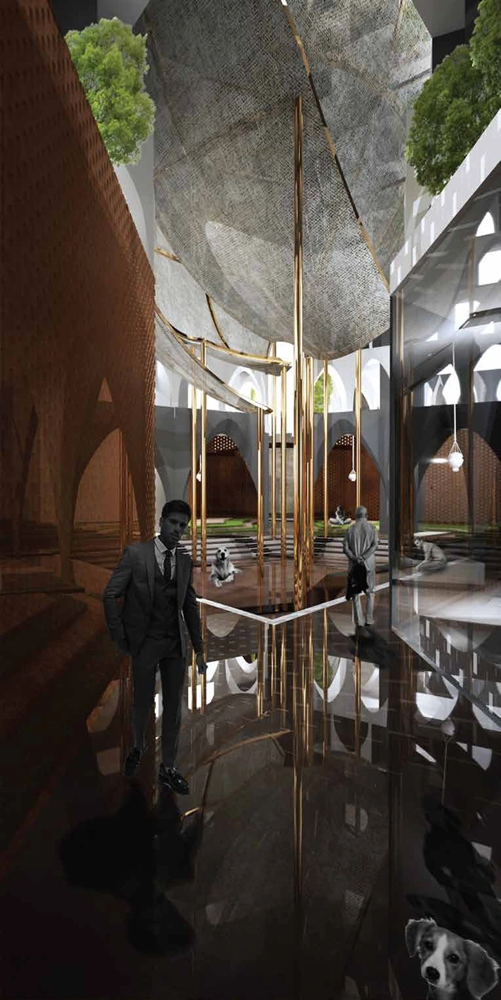

Nile Zero
A courtyard shaped by climate.


A courtyard shaped by climate.
A 200-unit housing proposal organised around a shared courtyard. Research into Cairo's courtyards, shaded openings and mashrabiya screens informs a scheme that links communal space with environmental design intent.
Bring a large housing community together while responding to intense sun, heat, privacy and the need for shared outdoor space.
Learning from
the vernacular.
Before the apartments, a study of the city and the house.
The research moves from Rhoda Island’s urban fabric to Cairo’s courtyard houses: their shaded edges, screened openings and carefully sequenced entrances. These observations establish a starting point for Nile Zero’s approach to climate, privacy and shared space.
Rhoda Island in context
Layers of infrastructure, housing patterns and urban grids locate the site between Giza and Old Cairo, overlooking the Nile.
A facade shaped by everyday life
The precedent study records deep window projections, lattice screens, overhangs and fabric shade within the street.
The site analysis sets out the river edge and surrounding neighbourhoods. The house studies then bring that reading down to the scale of a doorway, a screen and an internal court.
The buildings shown here are vernacular precedents studied for the project. The proposed apartment design follows in the next section.
The courtyard as an environmental centre
The house study connects an internal court, planting, a fountain and surrounding rooms through light and air. This research informs the open centre of the apartment proposal.
Mashrabiya: a layered threshold
The screen study examines how different lattice densities balance privacy, filtered light and ventilation, with an overhang shielding the opening.
Privacy begins at the entrance
The Manzil al-Kiridliya house plan traces indirect entrances and successive thresholds before the courtyard, revealing the relationship between movement and privacy.
Reading the house through day and night
Paired sections explore the study’s intended paths for air, daylight and heat exchange. They are analytical diagrams, rather than measured performance results.
From precedent
to proposal.
A shared centre
Nile Zero enlarges the idea of an internal court into a communal space for the housing community.
A filtered edge
Mashrabiya studies inform the proposal’s screens and extended eaves around the dwelling edges.
Shade at a larger scale
The proposal’s tensile canopy brings the research into shade over the shared courtyard.
Original site and precedent boards from the Nile Zero academic study. Annotations and image proportions are retained; select any board to inspect it.
A clear idea.
Spatial consequences.
Arrange homes around a courtyard, shade that shared centre with a tensile canopy, and filter the dwelling edges with screens and extended eaves.
Source project statement, ground and upper-level plans, courtyard section, facade studies and courtyard perspective.
The drawing room.
Plans and sections reveal
what an image can't.
Original ground-floor plan with landscape and community uses.
Original fifth-floor plan shows the relationship of dwellings and courtyard.
Original roof plan / not to scale.
From the inside.
Material, light and the
scale of occupation.
Project context and image notes
Academic housing design study. Climate arrows express the proposal's intent. The archive contains no verified thermal or airflow results; comfort improvements are not presented as measured outcomes.
Images marked AI-assisted are presentation studies. Original drawings remain the reference for dimensions, labels and geometry.